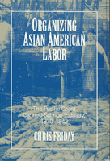

<body bgcolor="#FFFFFF" text="#000000" link="#0000FF" vlink="#CC0000" alink="#CC0000"><center><hr width="350" size="1" align="center" noshade>Asian and Asian American workers resist oppression and shape their own lives<hr width="350" size="1" align="center" noshade><p><a href="https://cdcshoppingcart.uchicago.edu/Cart/ChicagoBook.aspx?ISBN=9781566391399&&PRESS=temple" target="_top">Buy this book!</a> | <a href="https://cdcshoppingcart.uchicago.edu/Cart/Cart.aspx?PRESS=temple" target="_top">View Cart</a> | <a href="https://cdcshoppingcart.uchicago.edu/Cart/Cart.aspx?PRESS=temple" target="_top">Check Out</a></p><p></p></center><!--none//--><h1>Organizing Asian American Labor</h1>
<H2>The Pacific Coast Canned-Salmon Industry, 1870-1942</H2>
<h3>Chris Friday</h3>
<P>cloth 1-56639-139-3 $65.50, May 94, <FONT COLOR=#990033>Available</FONT>
<br>paper 1-56639-398-1 $33.95, Sep 95, <FONT COLOR=#990033>Available</FONT>
<br>Electronic Book 1-43990-379-4 $33.95 <FONT COLOR=#990033>Available</FONT>
<BR> 296 pp
6x9
6&nbsp;tables 6&nbsp;halftones
</P><h3 align="center"><P><font color="#996633">Outstanding Book in History Award, Association for Asian American Studies,
1995</font></P>
</H3>
<BLOCKQUOTE><I>"Very thoroughly researched in traditional and non-traditional sources, well-organized, and gracefully written, the volume will be of particular value of readers interested in immigration, ethnicity, labor, and the American West." </I><br>&#151<b><I>Choice</I></b><I></I></BLOCKQUOTE>
<p>Between 1870 and 1942, successive generations of Asians and Asian Americans&#151predominantly Chinese, Japanese, and Filipino&#151formed the predominant body of workers in the Pacific Coast canned-salmon industry.
<p>This study traces the shifts in the ethnic and gender composition of the cannery labor market from its origins through it decline and examines the workers' creation of work cultures and social communities. Resisting the label of cheap laborer, these Asian American workers established formal and informal codes of workplace behavior, negotiated with contractors and recruiters, and formed alliances to organize the workforce.
<p>Whether he is discussing Japanese women workers' sharing of child-care responsibilities or the role of Filipino workers in establishing the Cannery and Field Workers Union, Chris Friday portrays Asian and Asian American workers as people who, while enduring oppressive restrictions, continually attempted to shape their own lives.
<BR>&nbsp;<h2>Reviews</h2>
<p><I>"An important book, addressing a major topic in ethnic, industrial, labor, and Western history with extraordinary rich coverage of the Chinese and Japanese and Filipinos in the Pacific Coast canned-salmon industry. The research can only be described as awesome, quite extraordinary....This is a book which carries historical riches of value not only within but beyond the boundaries of this specific topic."</I>
<br>&#151<b>Robert Kelley</b>, University of California, Santa Barbara
<BR>&nbsp;<h2>Contents</h2><P>
<p>Maps and Illustrations
<br>Acknowledgments
<br>Introduction
<br>1. The Spawning Grounds
<br>2. "Satisfaction in Every Case": Cannery Work and the Contract System
<br>3. Cannery Communities, Cannery Lives
<br>4. Competitors for the Chinese
<br>5. "Fecund Possibilities" for Issei and Nisei
<br>6. From Factionalism to "One Filipino Race"
<br>7. Indispensable Allies
<br>8. A Fragile Alliance
<br>Conclusion
<br>Appendix
<br>Notes
<br>Index
</P><BR>&nbsp;<H2>About the Author(s)</H2>
<P><B>Chris Friday</B> is Assistant Professor of History at Western Washington University.</P>
<BR><H2>Subject Categories</H2>
<p><A HREF="/tempress/asian_amer.html" TARGET="_top">Asian American Studies</a>
<BR><A HREF="/tempress/american.html" TARGET="_top">American Studies</a>
</p>
<BR><h2 class="inpageheading">In the series</H2>
<P><I><a href="http://www.temple.edu/tempress/asam_history.html" onMouseOver="window.status='Click for other books in this series!'; return true;" onMouseOut="window.status=''; return true;" target="_top">Asian American History and Culture</a></i>, edited by K. Scott Wong, Linda Trinh V�, and Cathy Schlund-Vials.
</p><p>Founded by Sucheng Chan in 1991, the <I>Asian American History and Culture</I>, series has sponsored innovative scholarship that has redefined, expanded, and advanced the field of Asian American studies while strengthening its links to related areas of scholarly inquiry and engaged critique. Like the field from which it emerged, the series remains rooted in the social sciences and humanities, encompassing multiple regions, formations, communities, and identities. Extending the vision of founding editor Sucheng Chan and emeriti editor Michael Omi and David Palumbo-Liu, series editors K. Scott Wong, Linda Trinh V�, and Cathy Schlund-Vials continue to develop a foundational collection that embodies a range of theoretical and methodological approaches to Asian American studies.</p>
<p align="center"><a href="https://cdcshoppingcart.uchicago.edu/Cart/ChicagoBook.aspx?ISBN=9781566391399&&PRESS=temple" target="_top">Buy this book!</a> | <a href="https://cdcshoppingcart.uchicago.edu/Cart/Cart.aspx?PRESS=temple" target="_top">View Cart</a> | <a href="https://cdcshoppingcart.uchicago.edu/Cart/Cart.aspx?PRESS=temple" target="_top">Check Out</a></p><p><font face="Arial" size="1"><a href="copyright.html" onMouseOver="window.status='Web Copyright Policy';return true;" onMouseOut="window.status=''" title="Web Copyright Policy">&copy;</a> 2015 <a href="http://www.temple.edu" target="new" onMouseOver="window.status='Link to Temple University home page';return true;" onMouseOut="window.status=''" title="Link to Temple University home page">Temple University</a>. All Rights Reserved. http://www.temple.edu/tempress/titles/981_reg.html</font></p>